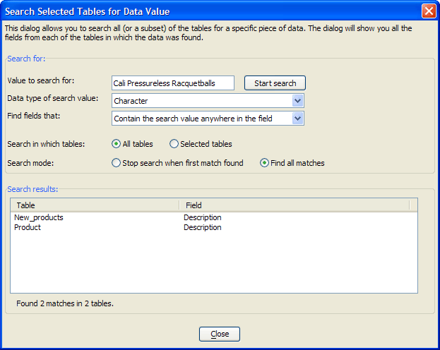

Find Tables that Contain a Data Value
This utility displays the Search Selected Tables for Data Value dialog box. This dialog allows you to discover the names of the tables and of their fields that contain a specified value.
In the example illustrated below, the dialog found that the phrase "Cali Pressureless Racquetballs" was found in the Description field of the New_Products and Product tables.

To find tables and fields:
Display the Tables/Sets tab of the Control Panel.
Select Table > Utilities > Find tables that contain a specified data value... . Alternatively, right click on the white space of the window and select Utilities > Find tables that contain a specified data value... .
Enter the value into the Value to search for control.
Select the data type of the value from the Data type of search value list. The options are:
"Character"
"Numeric"
"Logical"
"Time" - for fields that have both date and time values
"Date" - for fields that have only date values
"Short time" - for fields that have only time values
Select whether to search:
All tables
Selected tables
Select whether to stop when:
The first match is found
When all matches found
Click Start Search.
Close Close to exit the dialog box.
Supported by
Alpha Five Version 8 and Above, QReport Builder
See Also
SearchTables(), Find Tables that Contain a Field Name